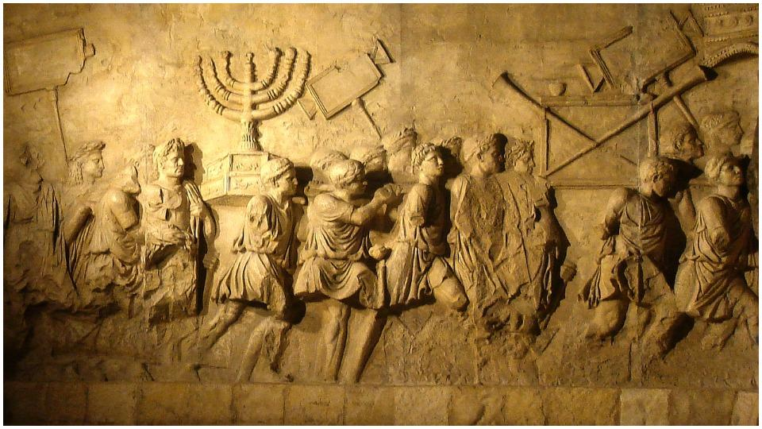

Contents

2 Maccabees 101The Maccabee and his companions, with יהוה leading them, recovered the temple and the city. 2They demolished the altars that the foreigners built near the marketplace, as well as the sacred precincts. 3They cleansed the temple and made another altar. Then they struck flints to make fire and they offered up sacrifices after a lapse of two years, and they prepared incense, lamps, and the sacred loaves. 4After they had done these things, they bowed to the ground and pleaded with יהוה that they would not experience such misfortunes again, but if they should ever sin, they would be disciplined by him with fairness and not turned over to slanderous and barbaric nations. 5On the anniversary of the temple’s defilement by foreigners, on that very day, the sanctuary was purified, on the twenty-fifth of the month, which is Kislev. 6They celebrated eight days with cheer in a manner like the Festival of Booths, remembering how during the previous Festival of Booths they had been roaming about in mountains and caverns like animals. 7So they held ivy wands, beautiful branches, and also palm leaves, and offered hymns to the One who had made the purification of His own temple possible. 8They voted and issued a public decree that all Yehudim should celebrate these days each year.
Chanukkah Means Dedication. Also called the Feast of Dedication or the Feast of Lights. The origins of Chanukkah center around the rebellion in 2 BC against the Syrian/Greeks. In 168 BC, Antiochus IV Epiphanes, the ruler of the Seleucid empire, conquered Yudea and banned the Torah, requiring Yehudim to worship Greek deities instead.
Later that year, his troops attacked Yerushalayim and killed thousands of its inhabitants. In 167 BC, Antiochus personally entered the Second Temple and defiled it by building an altar to Zeus and performing sacrificial rituals involving pigs within its sacred walls.
Historical References
1– Maccabees: The Feast of Dedication commemorates the Maccabean Revolt led by Judah Maccabees and the Freedom fighters in 1 Maccabees 4:36-59. The initial celebration of the Feast of Dedication took place in December 164 BCE. It was meant to serve as a commemoration of a missed Sukkot celebration due to the war, in memory of the deceased (2 Maccabees 10:1-8).
2- Favius Josephus. The event commemorated the reestablishment of the Temple sacrifices and the freedom to practice religion, according to the first-century CE writer and historian, Favius Josephus. Josephus mentions the Feast of Dedication in the first century CE as the "Festival of Lights," due to the sense of optimism and renewal brought about by the purification of the Temple for the Jews (Jewish Antiquities 12. 325)
Both the accounts of the Feast of Dedication from Maccabees and Flavius Josephus complement each other. The Temple was re- established during a belated Sukkot celebration due to the rebellion that had caused it to be missed originally. Sukkot marks the date of the dedication of the first temple by King Solomon in 955 BCE. The Maccabees considered their actions to be a re-creation of Solomon's Temple and a belated celebration of the eight-day Sukkot festival.
3- The Mishna, along with the books of Macabbees and Favius Josephus, contains various references to Chanukkah.
Winter Solstice Placement
Many people think that the Feast of Dedication/Chanukkah/Festival of Lights was deliberately scheduled to coincide with the Winter Solstice in order to rival Saturnalia. They argue that the dedication originally took place in the spring but was later shifted to align with the Winter Solstice. No historical records from ancient historians mention this. The Temple was rededicated on the 25th of Kislev (winter) in the year 165 BCE.
While the rebellion did not conclude with the completion of the Temple Dedication. Judah Maccabees, a priest and the rebel leader, passed away in a battle in April 160 BCE, several years following the dedication of the Temple. Maybe this is the starting point for the confusion regarding where to place the dedication.
According to Yochanan/John
Yochanan is deliberate in mentioning that Yahushua was in the Temple Courts during the Feast of Dedication in the winter, indicating that it was not a random occurrence.
Yochanan/John 1022At that time the Chanukkah [Feast of Dedication, during which candles are lit every evening to commemorate Maccabean victory over Greeks in 165BCE] came to be in Yerushalayim, and it was winter. 23And יהושע was walking in the Set-apart Place, in the porch of Shelomoh. 24So the Yehuḏim surrounded Him and said to Him, “How long do You keep us in suspense? If You are the Messiah, say to us plainly.”
It can be assumed that if this celebration was related to Saturnalia, Yahushua would have probably disapproved of it. Yahushua, born over a hundred years after the events in 1 Maccabees and 2 Maccabees, would have observed Chanukkah with his Yehudim family and community.
Traditions
Traditions are not inherently bad, unless they go against the Word or take the place of the Appointed Times. The majority, if not all, of Chanukkah's customs, were introduced by rabbis, including the use of a nine-candle menorah, the celebration of the miracle of oil, the playing of Dreidel, and the tradition of cooking foods in oil. These customs do not have roots in paganism. Although traditions may have evolved, the historical events of the Maccabean Revolt remain unchanged. The rabbis fabricated a tale about Adam's fear of the darkness, connecting Chanukkah with Saturnalia.
Summary
Chanukkah is not one of the scheduled festivals of יהוה, but rather a commemoration of the re-dedication of the Temple following the Syrian/Greek efforts to annihilate or assimilate the Jewish people into their own culture. Customs and practices do not carry the same weight as the teachings of the Father. Nothing can take the place of or challenge the significance of יהוה’s appointed times.
Its initial purpose was to rededicate the Temple that had sat filthy and had been used for the worship of false gods. This feast celebrated the fact that once again the House of יהוה was cleansed and sanctified for His use alone. In like manner, should cleanse our lives and set them apart for יהוה’s use. We should dedicate ourselves to יהוה and live only for Him. It can be celebrated as a great opportunity to recommit your life and “temple” to the worship of יהוה.